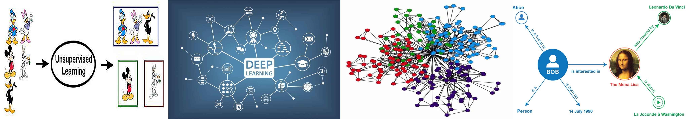

康 昭
副教授，四川省“千人计划”特聘专家, 全球高潜力AI华人青年学者Top100，唐立新优秀学者，四川省科学技术进步一等奖获得者
美国南伊利诺伊大学博士，2017年5月
电子科技大学，计算机科学与工程学院，认知计算与智能决策团队
邮箱: zkang@uestc.edu.cn
GoogleScholar
Github
研究方向

- 无监督机器学习， 例如聚类、降维、多视图学习。
- 深度学习， 例如表示学习、关系学习、对比学习。
- 图信号处理， 例如图神经网络、图聚类、滤波。
- 社交媒体分析， 例如网络舆情监测分析研判、事件预测、威胁评估。
- 自然语言处理，例如知识图谱、关系抽取、文本标注。
会议组织
- DSDE2023: (Program Co-Chair)
- ICPCSEE2022: (Program Co-chair)
- DSDE2022: (Program Co-chair)
- NCAA2021: (Track Chair)
- NCAA2020: (Track Chair)
- ITSLC 2020: (Workshop Chair)
- PRICAI18: (Workshop Co-chair)
- 第一届电子科大人工智能前沿论坛: (Publication Chair)
程序委员会成员及会议审稿
Area Chair
Senior Program Committee
Program Committee
期刊审稿
- Journal of Machine Learning Research (JMLR)
- IEEE Transactions on Pattern Analysis and Machine Intelligence (TPAMI)
- IEEE Transactions on Cybernetics (TCyb)
- IEEE Transactions on Knowledge and Data Engineering (TKDE)
- IEEE Transactions on Image Processing (TIP)
- IEEE Transactions on Systems, Man, and Cybernetics (TSMC)
- IEEE Transactions on Circuits and Systems for Video Technology (TCSVT)
- IEEE Transactions on Multimedia (TMM)
- IEEE Transactions on Neural Networks and Learning Systems (TNNLS)
- IEEE Transactions on Industrial Electronics (TIE)
- ACM Transactions on Multimedia Computing, Communications and Applications (TOMM)
- Journal of Artificial Intelligence Research (JAIR)
- Neural Networks
- Pattern Recognition
- Knowledge-based Systems
- Information Sciences
- Neurocomputing
- Neural Computing and Applications
- Expert Systems With Applications
- Engineering Applications of Artificial Intelligence
期刊编辑
- Mathematics
- Mathematical Problems in Engineering
- 自动化学报(英文版)
- 计算机工程
著作
- 《人工智能基础》, 徐增林，康昭，高等教育出版社，2022.8
新闻
- New... CALL FOR PAPER: 我们在Mathematics期刊(中科院JCR-2区)上组织了专刊“Trustworthy Graph Neural Networks”，欢迎投稿。
- New... 2022.09月，一篇论文被CCF-B类会议ICDM 2022接收。
- New... 2022.08月，徐增林教授和我合写的《人工智能基础》教材由高等教育出版社正式出版，欢迎采用。
- New... 2022.08月，一篇论文被中科院JCR2区期刊Information Sciences接收。
- New... 2022.07月，一篇论文被中科院JCR2区期刊KNOWLEDGE-BASED SYSTEMS接收。
- New... 2022.07月，一篇论文被CCF-B类会议ECCV 2022接收。
- New... 2022.04月，一篇论文被CCF-T1期刊计算机研究与发展接收。
- New... 2022.04月，一篇论文被中科院JCR2区期刊Neural Computing and Applications接收。
- New... 2022.03月，一篇论文被中科院JCR1区期刊Advanced Science接收。
- New... 2022.01月，一篇论文被CCF-T2期刊计算机工程接收。
- New... 2021.12月，一篇论文被CCF-B类会议SDM 2022接收。
- New... 2021.09月，一篇论文被CCF-A类会议NeurIPS 2021接收。
- New... 2021.07月，一篇论文被CCF-A类期刊IEEE Transactions on Knowledge and Data Engineering接收。
- New... 2021.07月，一篇论文被CCF-A类会议MM 2021接收。
- New... 2021.05月，一篇论文被中科院JCR1区期刊IEEE Transactions on Image Processing接收。
- New... 2021.04月，一篇论文被CCF-A类会议IJCAI 2021接收。
- New... 2021.02月，一篇论文被中科院JCR1区期刊IEEE Transactions on Cybernetics接收。
- New... 2021.01月，一篇论文被中科院JCR2区期刊Information Sciences接收。
- New... 2021.01月，一篇论文被中科院JCR2区期刊Neurocomputing接收。
- New... 2020.12月，一篇论文被CCF-A类会议AAAI 2021接收。